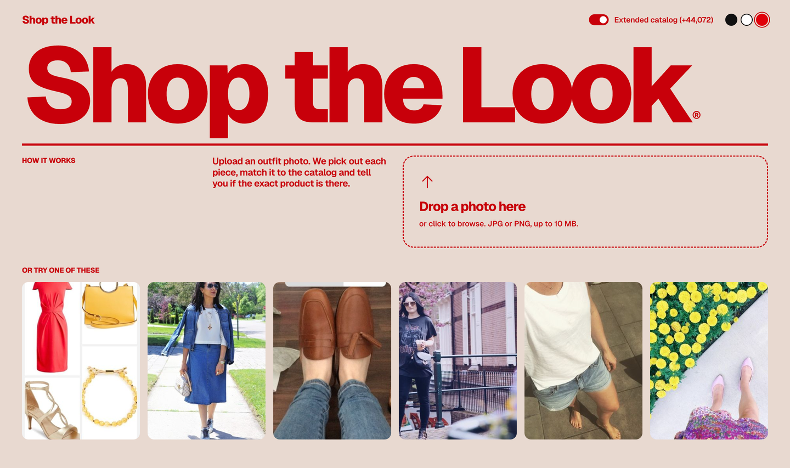
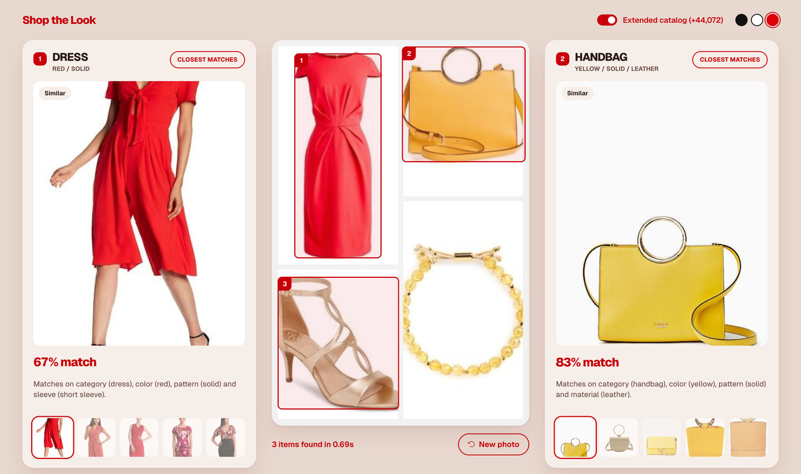

app/final_eval.py (validation), tests/check.py and tests/edge_cases.py run against the shipped server.Given a scene photo, the system (1) detects each fashion item, (2) turns every item crop into an embedding, (3) searches the catalog by cosine similarity (the provided catalog, plus an optional extended catalog), (4) decides whether a result is an exact match or only a similar product, and (5) explains each recommendation from attributes (category, color, pattern, material, style). Nothing is trained from scratch: pretrained fashion vision-language models are used zero-shot, and the validation file is used to measure and calibrate the system.
scene image -> OWLv2 open-vocabulary detector (29 prompts, 25 labels) -> candidate boxes
box -> crop embedding (Marqo-FashionSigLIP) -> relabel -> verify (not clothing? looks like its label?) -> declutter
item -> cosine search over 28,094 provided + 44,072 optional extended products
-> rank = cosine + family + colour - hubness penalty; hide weak and duplicate matches
-> exact-vs-similar threshold -> zero-shot attribute tags -> explanation sentence
FastAPI /api/search -> web UI (boxes over the scene, one card per item beside the photo, Extended-catalog switch, three colour themes)


Figure 1. The demo UI. Left: upload screen with sample photos. Right: results, with the detected items outlined on the photo and one card per item (large top match, match percentage, explanation, and a strip of the other matches).
OWLv2 (owlv2-base-patch16-ensemble) is prompted with 29 text queries covering 25 labels (tops, dresses, jackets, pants, skirts, shoes, boots, sneakers, heels, handbags, sunglasses, earrings, necklaces, belts, ties, suits, blazers and others; synonyms such as "boots" and "leather belt" feed one label). Detection is split into four stages so each can be tuned without re-running the detector:
Marqo-FashionSigLIP (ViT-B/16, 512-d, L2-normalised) embeds both crops and catalog images, and its text tower produces zero-shot attribute tags. It embeds both the provided and the extended catalog. It was compared with FashionCLIP on the validation set and won (section 6).
Each catalog product is one 512-d vector of its full image, plus a zero-shot garment-family probability vector (for extended products the real product type from their metadata is used instead) (15 families: tops, bottoms, dresses, outerwear, shoes, bags, eyewear, hats, scarves, belts, ties, bracelets, necklaces, earrings, watches) derived from the same embedding. I also tried multi-view representations (full, top half, bottom half, center crop) to counter the "several items per product photo" problem; they lowered recall (pooled R@10 from 8.3% to 1.4%) because every extra view adds look-alike false positives, so the final index is single-view. This is a measured negative result, not an assumption.
score = cosine + 0.2 x family + 0.1 x colour + 0.1 x sleeve - 0.5 x hubness. Family is the zero-shot garment-family probability of the product (94% accurate against the 37,155 extended products that have a real type label; bracelets 98%, belts 99%, ties 99.6%); extended products use their true type. Families are fine-grained (belts, ties, bracelets, necklaces, watches, hats are separate) so a belt query cannot be answered with ties; watches and bracelets share a group because detectors call a wrist item either. Colour uses a colour-similarity table (red is close to pink, navy to blue, silver to grey) applied when the crop's colour tag is at least 50% confident. At the earlier weight of 0.05 only 88.7% of shown top-5 results matched the photographed item's colour (a red dress returned a black one); at 0.1, 96.5% do, for a top-100 recall cost of about 3 points because true pairs in this dataset often differ in colour. Sleeve (short, long, sleeveless; tops, outerwear and dresses only) is a zero-shot tag used in the same way, so a short-sleeve shirt does not return long-sleeve coats; it is neutral on validation, whose labels are too loose to reward it. Weights were chosen on the validation pairs (grid in tune_rank.py, tune_hub.py).hub.npy). At weight 0.5 top-100 recall rose from 31.6% to 35.1% on the extended index while the top-20 share of result slots fell from 10% to 6.3%; weights above 0.75 hurt, so 0.5 is used.data/blocked.json). Before wallets were blocked, 925 wallets could be returned for handbag queries.Zero-shot tags are computed for the crop and for each match by softmax over text prompts ("a {color} colored garment", "a garment made of {material}" and so on). The explanation lists the attributes that agree and those that differ, e.g. "Matches on category (skirt), color (denim blue) and material (denim). Differs in pattern: solid vs floral." Near-synonym categories (top, blouse, t-shirt) count as one family. These are template sentences grounded in measured agreement, so they cannot invent attributes the models did not see. An attribute is stated only when both the crop and the match tag it with at least 40% softmax confidence, and pattern, material and style are never stated for eyewear and jewelry, where those tags are unreliable.
For every validation pair whose product is in the catalog (288), the scene runs through the full pipeline (detect, relabel, verify, declutter, rank). The pair's rank is the best rank of the true product over the scene's items, and counts only if the true product's cosine is above the display floor (otherwise the UI hides it). This matches the UI, which shows a top-K list per item. Reported: recall@K and MRR against a random baseline of K/N, and the share of pairs whose true garment family was detected.
| System (288 pairs) | R@5 | R@10 | R@100 |
|---|---|---|---|
| FashionCLIP, whole scene as query (pooled, 28,094 products) | 1.7% | 2.4% | 10.1% |
| FashionCLIP + OWLv2 crops (pooled) | 3.5% | 4.2% | 16.0% |
| FashionSigLIP + crops (pooled) | 6.2% | 8.3% | 18.8% |
| FashionSigLIP + crops + 4-view product index (pooled) | 1.0% | 1.4% | 7.6% |
| Detection fixes + family bonus, per-item top-K | 11.8% | 14.6% | 34.7% |
| Ranking with verification, family, colour, sleeve, hubness, floor (before the colour-first display rule), provided catalog | 11.5% | 17.4% | 37.5% |
| The same, Extended catalog on (72,166 candidates) | 10.1% | 15.6% | 32.3% |
| Shipped system (colour-first display), provided catalog only | 10.4% | 15.3% | 28.8% |
| Shipped system, Extended catalog on (default) | 9.4% | 13.9% | 26.7% |
| Random ranking (28,094 / 72,166 products) | 0.02% / 0.007% | 0.04% / 0.014% | 0.36% / 0.14% |
Shipped, provided catalog: R@1 4.9%, R@50 25.7%, MRR 0.076 (extended: R@50 21.5%, MRR 0.072); the right garment family was among the detected items for 87.5% of pairs. The first four rows pool all crops into one ranking, which is stricter than the shipped per-item view, so compare rows only within the same metric. Latency is about 0.6 s per photo on an Apple M-series GPU and 1.4 s on its CPU.
tests/)Recall on validation pairs does not show how the system fails on bad input, so two automated suites run against the live API. Image suite (check.py, 68 images, an explicit expected result per group): three motion-blurred photos, six crops of real failure screenshots (half-cropped short-sleeve shirt, trousers with no belt, red dress with yellow bag), real photos from earlier failures (shoes, belt, suit, a car), seven non-clothing images, and 48 half-cropped garments (top, bottom and left half of T-shirts, shirts, trousers, track pants, tracksuits, jeans). 68 of 68 pass; non-clothing images returned 7 invented items before verification and 0 after; the true product is in the top 5 for 31 of 48 half or full garment images. The suite found two real bugs after the headline numbers looked fine: half-visible garments were rejected by a score cut-off that the crop check can safely override, and an upload error card appeared off-screen. Edge-case suite (edge_cases.py, 12 inputs): empty, corrupt and truncated files get 400; tiny, grey, transparent, panorama, WebP, GIF and BMP images are handled; over 10 MB gets 413; a 30,000 x 30,000 image gets 413 (it used to crash the server with a 500); six simultaneous requests return identical results. Clean-install check: a new virtual environment built only from requirements.txt, forced to CPU, passed both suites at about 1.4 s per photo. The Dockerfile is untested (Docker's service was not running). The blurred and crop test images were made from screenshots of the app, so they contain its box overlays and are indicative only.
The provided catalog is the company's inventory, so the expansion is optional and clearly separated. An Extended catalog switch in the UI (on by default) adds 44,072 products from the public Fashion Product Images dataset (Hugging Face mirror benitomartin/fashion-product-images-small-384x512, 384x512 photos with name, type and color). Extended results carry an "Extended" badge and their product name, and the switch turns them off to see only the provided catalog. Check the dataset's license before any commercial use.
Other accuracy work: choosing the embedding model on validation (FashionSigLIP over FashionCLIP, about 2x R@10); adding accessory, footwear, suit and tie prompts after inspecting failures; the garment-family prior; detector noise filtering; and testing multi-view products (rejected).